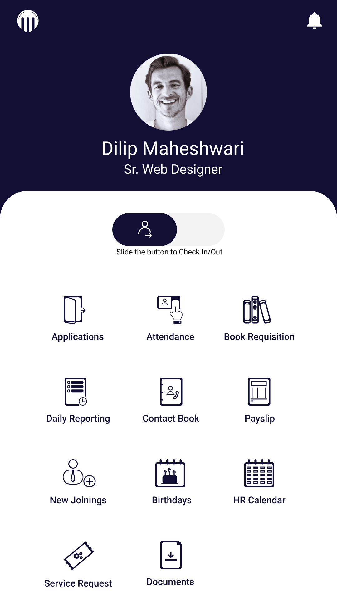
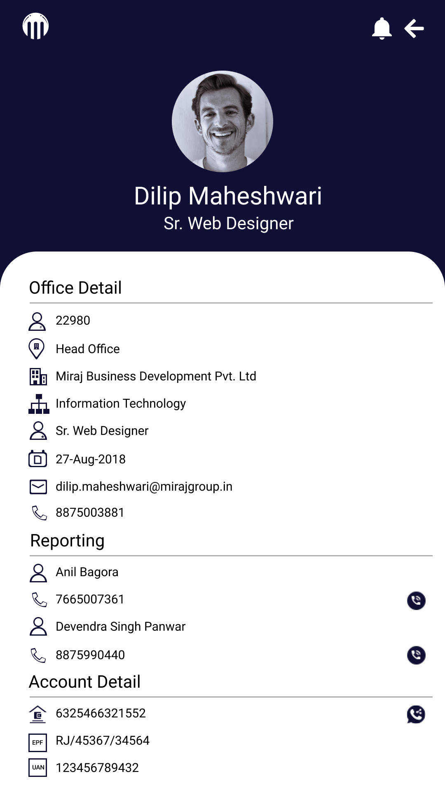
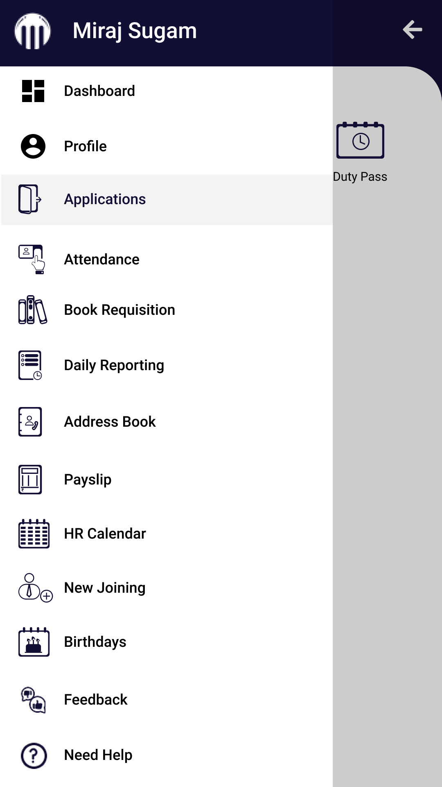
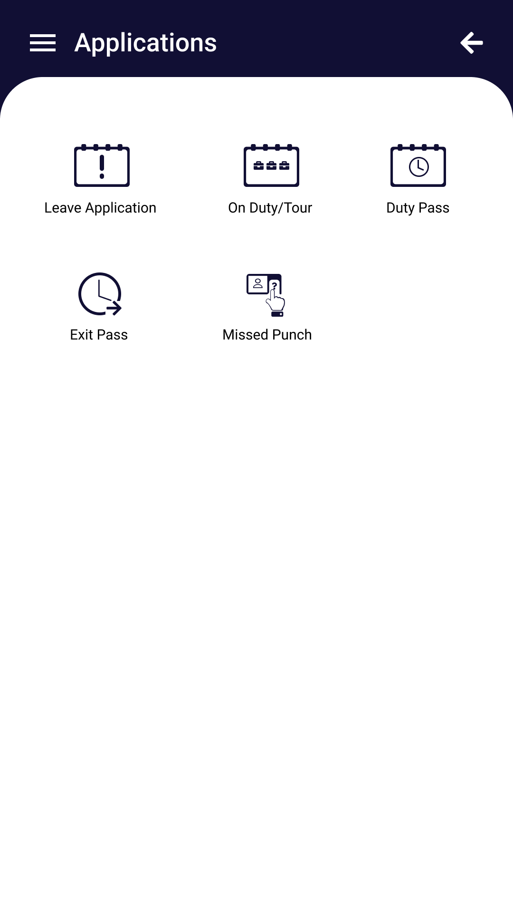
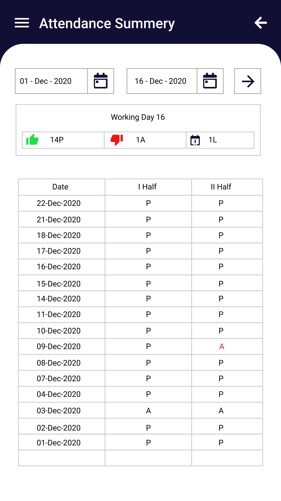
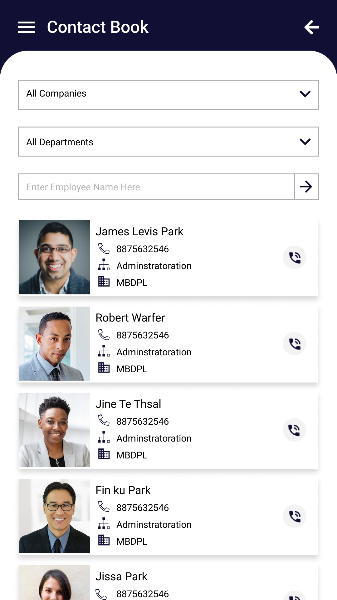
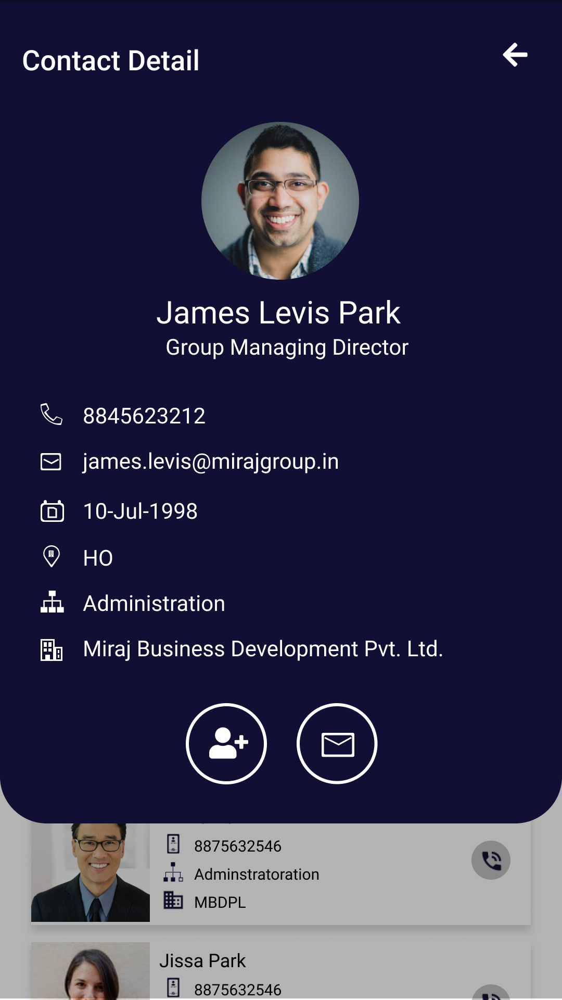

01
Existing ecosystem
The mobile experience needed to work within an existing employee self-service ecosystem rather than starting from an entirely new product model.
A beta mobile experience designed in 2021 to bring employee self-service capabilities into a more accessible and convenient mobile format.
This case study presents the project as it was designed in 2021. The visual language and interface decisions reflect that period of the product.

Employee Self-Service was created to give employees a more accessible way to interact with their workplace-related services.
The project involved taking the existing employee self-service experience and designing a mobile application around it.
Rather than treating the mobile application as simply a smaller version of a web portal, the experience needed to be structured around the constraints and behaviours of mobile interaction.
I worked on the beta version of the application as the UI/UX Designer. The initial design phase was completed in approximately 1.5 months.
The goal was not simply to reproduce an existing portal on a smaller screen. The challenge was to create a clear and usable mobile experience for everyday employee needs.
The mobile experience needed to work within an existing employee self-service ecosystem rather than starting from an entirely new product model.
Existing services and information needed to be translated into an interface that worked naturally on a mobile screen.
The beta experience had to be designed within approximately 1.5 months, requiring focus on the essential product experience.
I was responsible for the UI/UX design of the mobile application and worked on translating the employee self-service experience into a mobile product.
Organising the information and services into a mobile-friendly experience.
Designing the visual interface and interaction patterns for the application.
Connecting the core screens and flows into a mobile prototype.
Preparing the initial product experience within the project timeline.
I reviewed the existing employee self-service experience and identified the core experience that needed to move into mobile.
I organised the information and services into a clearer mobile structure with attention to navigation and information hierarchy.
I translated the structure into the mobile interface, defining layouts, hierarchy, components and interaction patterns.
I connected the key screens and interactions into a mobile prototype to communicate the intended experience.
The initial mobile experience was completed as a beta version within approximately 1.5 months.
The design focused on clarity, accessibility and making common employee services easier to reach through mobile.
Information and actions were given clear visual priority to make the interface easier to understand.
The experience was structured around mobile screens, touch interaction and simplified information presentation.
Familiar navigation and interaction patterns helped keep the experience approachable for employees.
These screens represent the mobile prototype designed in 2021. Replace the placeholders below with your original prototype screens.
The home experience acts as the entry point to the employee's self-service journey and provides access to the available services.

Employee-related information is presented within the mobile experience so that users can access relevant information without depending on the desktop portal.

The service experience brings employee self-service capabilities into a mobile interaction model.




The interface shown in this case study reflects the product, design practices and visual language of 2021.
I am intentionally showing the original work rather than redesigning the screens to make them look like a current 2026 product.
For me, the value of this project is in the product thinking, constraints, delivery timeline and the fact that the application went beyond the initial beta and continues to be used.
The project continued beyond the initial design phase and became a live employee-facing application.
Looking back at this project, one of the most important aspects for me is the context in which it was created.
The application was designed in 2021, delivered as a beta experience and completed within a relatively short timeline of approximately 1.5 months.
Because the original interface is now several years old, I would approach some of the visual and interaction decisions differently if I were designing the product today.
However, I believe the project still demonstrates an important part of my product-design experience: taking an existing employee experience, translating it into mobile, working within constraints and delivering a product that continued beyond the initial design phase.
The application is still live and is used by approximately 1,500 Miraj employees, which gives this project significance beyond the interface itself.
With today's product-design practices, I would revisit the interaction model and explore more contemporary mobile patterns.
I would put stronger emphasis on accessibility, inclusive interaction and clearer accessibility considerations throughout the experience.
I would formalise the interface into a stronger reusable component and design-system structure for continued product evolution.
Real product work requires balancing user needs, existing systems, timelines and business requirements.
Moving an existing experience to mobile requires reconsidering hierarchy, navigation and how information is presented.
A project can remain valuable even when its visual language becomes dated. Continued product use provides a different perspective on the value of the original design work.
Rather than presenting older work as something created today, I prefer to show the original work and explain what I would improve with today's product-design practices.